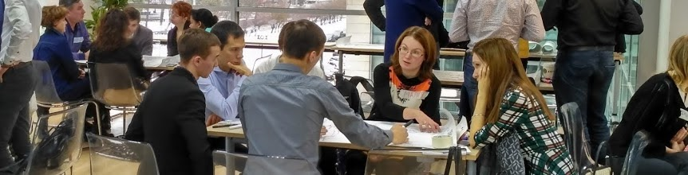

Схематизация

Это сайт неформального исследовательского сообщества — "Схематизация". Наша группа была создана в 2014 году для изучения, использования и массового распространения одноименного процесса коллективного мышления в традиции СМД-подхода "Московского методологического кружка" в рамках цикла игр «Технологии мышления» под руководством П.Г.Щедровицкого.
Организация коллективного мышления в нашей редакции имеет свою принципиальную ⚙️ технологию —
Схематизация - это коллективное рисование на листах 6 человек схем - чертежей рабочих ситуаций деятельности в 4-х (иногда в 5-ти) планах "Системы-2" - оргструктурном, процессном, материальном, (связи) и функциональном с перспективой их объединения на одном листе флипчарта с разделением слоев мышления, коммуникации и деятельности ... продолжение ⏩
На первом этапе мы предлагаем группам нарисовать, «объект управления» - город или предприятие. Рисование - это на самом деле работа по анализу ситуации. Выделение и рисование на доске главных элементов связей и процессов в группах происходит обычно по-разному. Незрелое понимание, как устроен объект управления, ограничивается графическими метафорами цветка, дерева, вселенной, карты понятий и тп., Зрелое понимание может быть выражено, например, как географическая карта с разделением на социально-экономические классы и слоем управления и рефлексии ... продолжение ⏩
C 2010 года мы регулярно проводим различные сессии* в крупных компаниях, таких, как SAP, Ernst & Young, BAT, PriceWaterhouseCoopers, Газпром-Информ и т.п. В некоммерческих организациях - таких, как Фонд развития электронной демократии (с участием министра связи России Игоря Щеголева), Ассоциации молодежных правительств на площадке Петербургского экономического форума и др. Фрагменты игр показывали 5-й канал, Сов.секретно, Евроньюс. Все такие мероприятия, а их за это время было более 150 ... продолжение ⏩
* Заполнить заявку на проведение игры можно здесь🚀